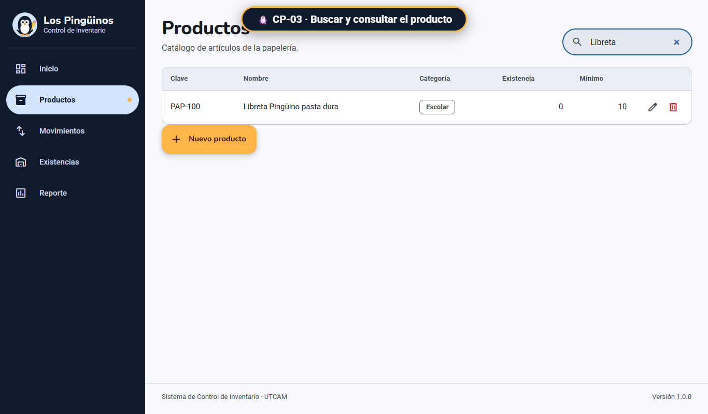
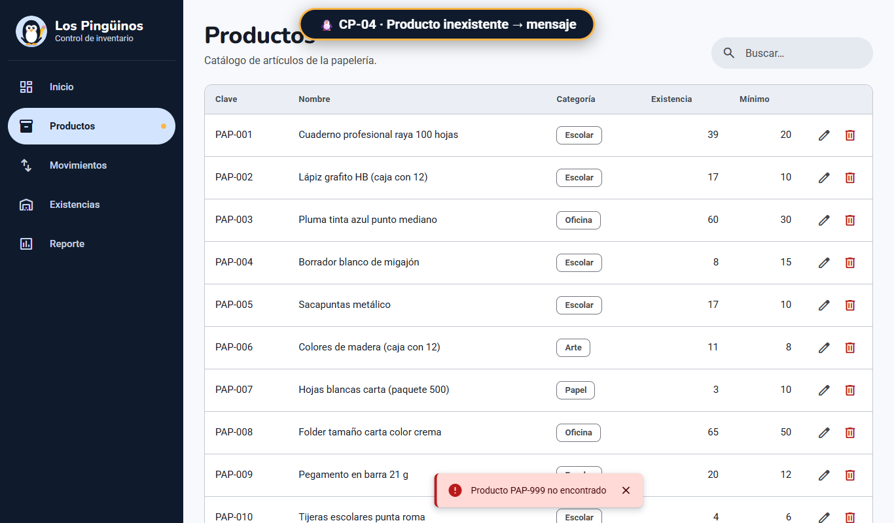
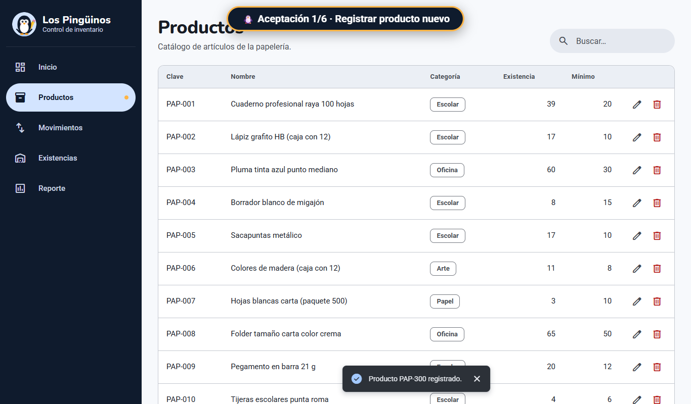
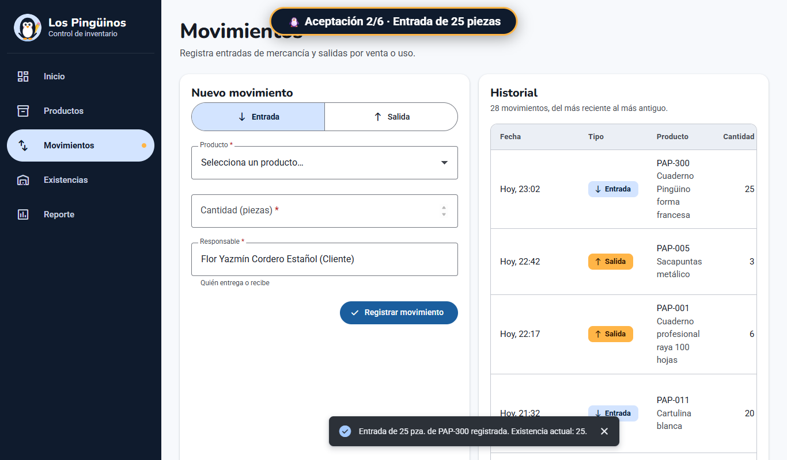
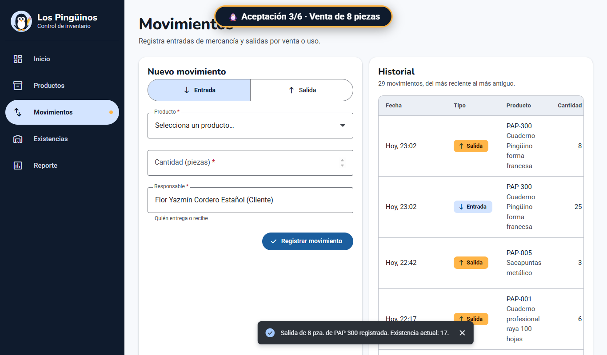
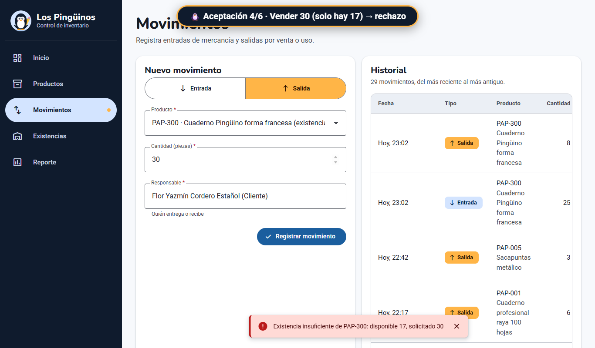
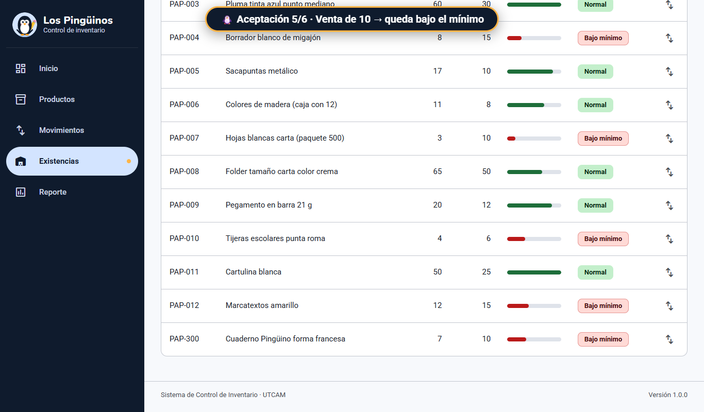
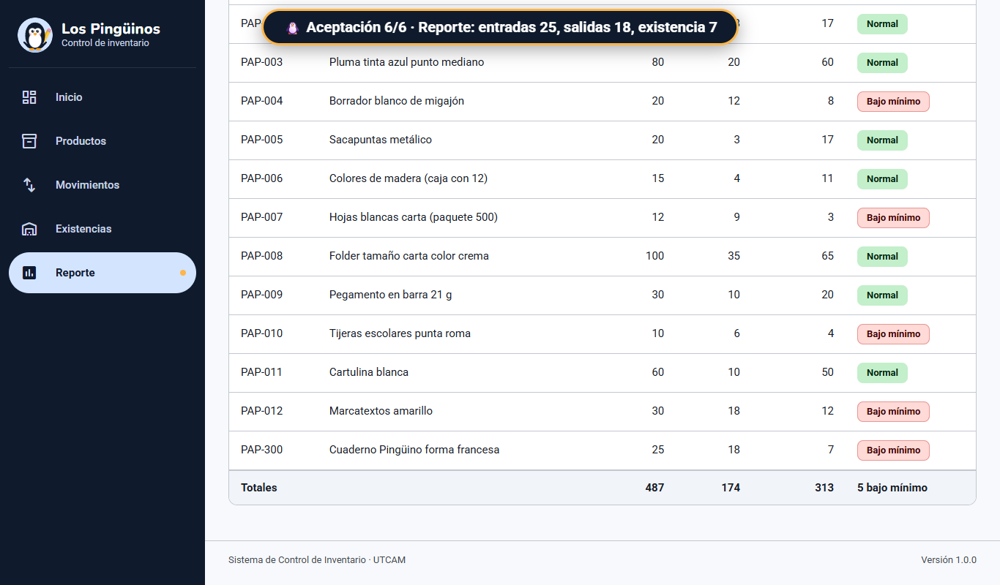

Resultado esperado, resultado obtenido y evidencia de cada caso. Las capturas son las pantallas que guardó Playwright al cerrar cada prueba.
Unitaria · PHPUnitRF-01 Registrar productosTiempo: < 0.01 s
- Resultado esperado
- Producto guardado con existencia 0.
- Resultado obtenido
- P-002 se guardó con existencia 0.
OK CP-01 Registrar producto con datos válidos (0.000 s)
ProductosTest::testRegistrarProductoConDatosValidos
Unitaria · PHPUnitRF-01 Registrar productosTiempo: < 0.01 s
- Resultado esperado
- Error de clave repetida.
- Resultado obtenido
- Se mostró “La clave P-001 ya existe”.
OK CP-02 Registrar producto con código duplicado muestra error (0.001 s)
ProductosTest::testRegistrarProductoDuplicado
Unitaria · PHPUnitRF-02 Consultar existenciasTiempo: < 0.01 s
- Resultado esperado
- P-001 bajo mínimo y P-002 normal.
- Resultado obtenido
- Así aparecieron los dos productos.
OK CP-11 Consultar existencias indica productos normales y bajo el mínimo (0.000 s)
MovimientosTest::testConsultarExistencias
Unitaria · PHPUnitRF-03 Registrar entradas de mercancíaTiempo: < 0.01 s
- Resultado esperado
- Existencia de 0 a 20.
- Resultado obtenido
- La existencia subió a 20.
OK CP-07 Entrada de producto con cantidad válida incrementa la existencia (0.000 s)
MovimientosTest::testEntradaIncrementaExistencia
Unitaria · PHPUnitRF-04 Actualizar cantidades con cada ventaTiempo: < 0.01 s
- Resultado esperado
- Venta rechazada; quedan 20.
- Resultado obtenido
- La venta de 50 se rechazó.
OK CP-09 Salida mayor a la existencia se rechaza sin modificar la existencia (0.001 s)
MovimientosTest::testSalidaMayorALaExistenciaSeRechaza
Integración · PHPUnitRF-05 Generar el reporte de movimientosTiempo: < 0.01 s
- Resultado esperado
- Totales iguales a los movimientos.
- Resultado obtenido
- Los totales coincidieron.
OK CP-12 Reporte básico: totales iguales a los movimientos registrados (0.000 s)
ReporteTest::testReporteCoincideConMovimientos
Integración · PHPUnitRF-03 Registrar entradas de mercancíaRF-05 Generar el reporte de movimientosTiempo: 0.25 s
- Resultado esperado
- Datos conservados al recargar.
- Resultado obtenido
- Los datos se conservaron.
OK CP-13 Guardar y volver a cargar conserva productos, existencias y movimientos con fecha (0.250 s)
AlmacenJsonTest::testGuardarYCargarConservaLosDatos
Sistema · PlaywrightRF-02 Consultar existenciasTiempo: 2.3 s
- Resultado esperado
- PAP-100 en la búsqueda.
- Resultado obtenido
- El buscador mostró PAP-100.

Buscador de Productos con “Libreta”.
Sistema · PlaywrightRF-02 Consultar existenciasTiempo: 1.4 s
- Resultado esperado
- Aviso de producto no encontrado.
- Resultado obtenido
- Apareció el aviso de PAP-999.

Aviso “Producto PAP-999 no encontrado”.
Sistema · PlaywrightRF-04 Actualizar cantidades con cada ventaTiempo: 1.5 s
- Resultado esperado
- PAP-100 queda en 15.
- Resultado obtenido
- Se confirmó la salida de 5 piezas.
Salida de 5 piezas registrada en Movimientos.
Aceptación · PlaywrightRF-01 a RF-05Tiempo: 28.2 sResponsable: Flor Yazmín Cordero Estañol
- Resultado esperado
- Día completo sin errores: la venta de 30 se rechaza y PAP-300 queda “Bajo mínimo” con 7 piezas.
- Resultado obtenido
- Las 6 partes pasaron; el reporte muestra 25 entradas, 18 salidas y 7 en existencia.

Parte 1 La cliente registra un producto nuevo 6.1 s
Parte 2 Llega mercancía: entrada de 25 piezas 4.7 s
Parte 3 Venta: salida de 8 piezas 4.7 s
Parte 4 No se puede vender más de lo que hay 4.7 s
Parte 5 Existencias avisan cuando un producto queda bajo el mínimo 6.3 s
Parte 6 El reporte cuadra con lo que se movió 1.7 s